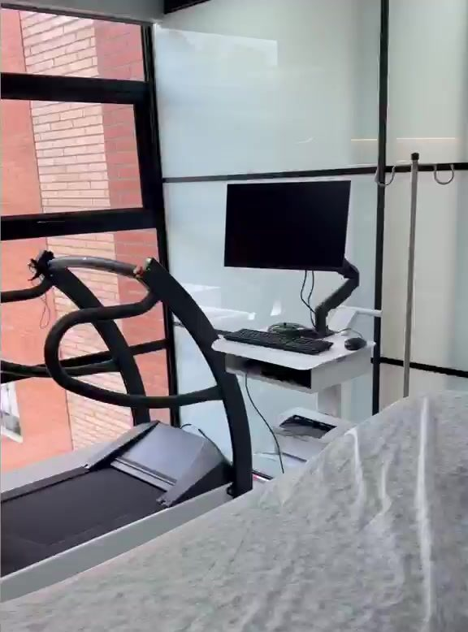
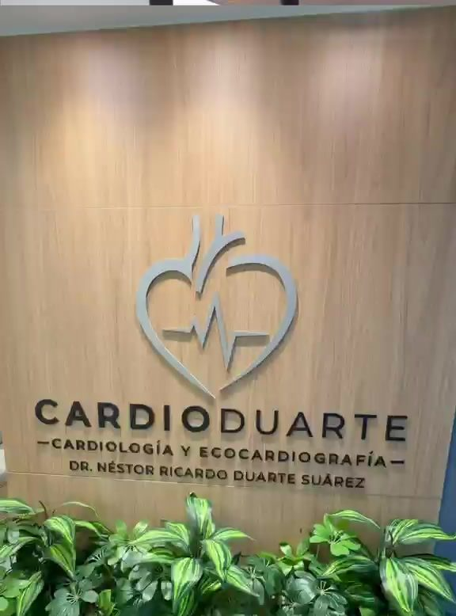
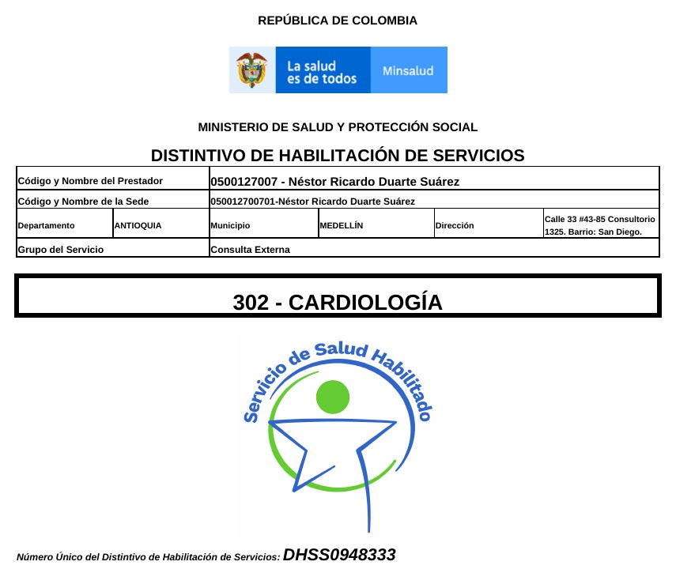

Consulta de cardiología
Valoración del especialista para síntomas como dolor en el pecho, palpitaciones, presión alta o cansancio, y control de enfermedades del corazón.
En CARDIODUARTE le atiende directamente el especialista. Le explicamos cada examen antes de hacerlo, resolvemos sus dudas con calma y le entregamos resultados que usted pueda entender.



Consulta, ecocardiografía y pruebas del corazón en un solo lugar.

15+
En diagnóstico y tratamiento del corazón
8
Consulta, ecocardiografía, pruebas y monitoreo
2
Cardiología e imágenes no ionizantes

Cardiólogo y ecocardiografista con más de 15 años de trayectoria en el diagnóstico y el tratamiento de enfermedades del corazón. Ha liderado servicios de cardiología y hoy atiende en Medellín a pacientes que buscan una valoración cuidadosa y cercana.
Le acompañamos desde el primer mensaje hasta la entrega de su resultado, explicado por el especialista.
Elija día y hora en la agenda en línea, o escríbanos por WhatsApp o con el formulario. Cuéntenos qué necesita y si tiene orden médica.
Le proponemos día y hora, le decimos el valor o la cobertura y le enviamos la preparación del examen.
Siga las indicaciones de su examen. Si tiene dudas, escríbanos antes de la cita.
Llegue 15 minutos antes con su documento y exámenes previos. Sale con su resultado explicado.
El médico que le examina es el mismo que interpreta su estudio y le explica el resultado.
Valoración del especialista para síntomas como dolor en el pecho, palpitaciones, presión alta o cansancio, y control de enfermedades del corazón.
Ultrasonido que muestra en tiempo real la forma y el funcionamiento del corazón y sus válvulas. No duele y no usa radiación.
Ecocardiograma antes y después de caminar en banda, para ver cómo responde el corazón al esfuerzo.
Electrocardiograma mientras camina en banda, con aumento gradual de la intensidad. Mide su capacidad física y la respuesta del corazón.

Registro de la actividad eléctrica del corazón en pocos minutos. Detecta alteraciones del ritmo y de la conducción.
Para quien no puede hacer ejercicio: un medicamento simula el esfuerzo bajo vigilancia continua del especialista.
Útil si: tiene limitaciones para caminar o correr.
Un pequeño equipo registra el ritmo del corazón mientras usted sigue su vida normal.
Útil si: siente palpitaciones, mareos o ha tenido desmayos.
Mide la presión durante 24 horas en su entorno habitual, para un diagnóstico preciso de la hipertensión.
Útil si: sus cifras varían mucho o se le sube la presión en consulta.
Su consulta y sus exámenes los hace directamente el Dr. Duarte, no un intermediario.
Quien le examina es quien interpreta el estudio y le explica el resultado.
Ecocardiografía, pruebas de esfuerzo, Holter y MAPA sin ir de un sitio a otro.
Cardiología e imágenes no ionizantes habilitadas ante el Ministerio de Salud.
Experiencia en diagnóstico y tratamiento, incluida la jefatura de un servicio de cardiología.
Torre Médica Metropolitan Salud, sobre la Avenida El Poblado (San Diego), frente a la estación de Metroplús.
Recomendaciones generales de salud cardiovascular. No reemplazan la valoración médica ni las indicaciones de su médico tratante.
Mida su presión arterial y pregunte por su colesterol y su glucosa. Muchas veces no dan síntomas.
Caminar a paso rápido suma. Si va a empezar a hacer deporte, consulte antes.
Dejar el cigarrillo es de las decisiones que más protegen su corazón, a cualquier edad.
Más frutas, verduras y alimentos frescos; menos sal, azúcar y productos ultraprocesados.
Dormir bien y darse pausas también es cuidar la presión arterial y el ritmo del corazón.
Si tiene antecedentes familiares, hipertensión o diabetes, una valoración a tiempo marca la diferencia.
Dolor u opresión en el pecho, falta de aire repentina, desmayo o palpitaciones con malestar requieren atención inmediata. Acuda al servicio de urgencias más cercano o llame al 123.
Una evaluación completa de su corazón en un solo programa, con los exámenes que su caso necesita y los resultados explicados por el especialista.
Valoración completa con el especialista.
Con ejercicio o farmacológico, según el caso.
Registro continuo del ritmo del corazón.
La presión durante 24 horas en su rutina.
Conozca quién le atiende.
Prestador 0500127007 · Dr. Néstor Ricardo Duarte Suárez. Puede verificar cada distintivo en el portal de MinSalud.
Verificar en MinSalud

Indicaciones generales. Siga siempre lo que le indique el consultorio al confirmar su cita. No suspenda medicamentos sin orden médica.
Respuestas rápidas sobre citas, coberturas y cómo llegar.
Escríbanos por WhatsApp al 318 798 4545 y le respondemos en horario de atención.
Escribir por WhatsAppPuede reservar en línea en la agenda del Dr. Duarte en Doctoralia, escribirnos por WhatsApp al 318 798 4545 o dejar sus datos en el formulario de esta página. Si nos escribe, le proponemos día y hora y le enviamos la preparación del examen.
Atendemos pacientes particulares, con póliza o con medicina prepagada, según la cobertura. Escríbanos con el nombre de su aseguradora y le confirmamos cómo puede ser atendido.
Documento de identidad, la orden médica y la autorización si su póliza o prepagada la exige, y sus exámenes y la lista de medicamentos actuales.
Para la consulta particular no. Para exámenes cubiertos por su aseguradora, normalmente sí: confírmelo con su póliza o prepagada antes de la cita.
Torre Médica Metropolitan Salud, Calle 33 n.º 43-85, consultorio 1325. Avenida El Poblado antes de San Diego, frente a la estación de Metroplús. Medellín.
Lunes a viernes, de 7:00 a. m. a 5:00 p. m.
Vea los horarios disponibles del Dr. Duarte y reserve en línea, sin esperar respuesta.
Reservar en línea en DoctoraliaYa sea un chequeo o un examen puntual, le ayudamos a planear su cita.